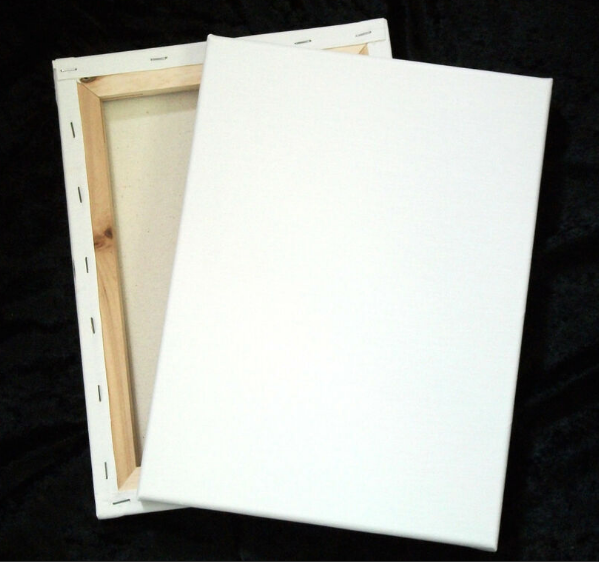
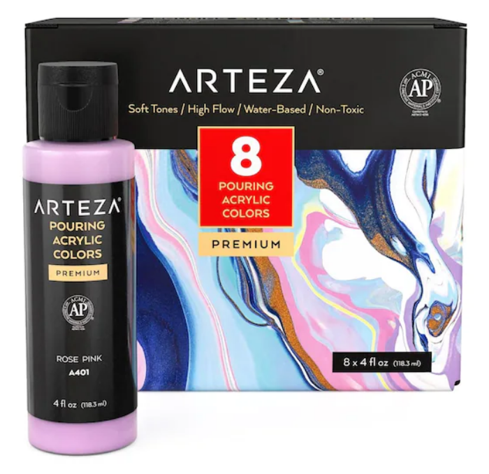
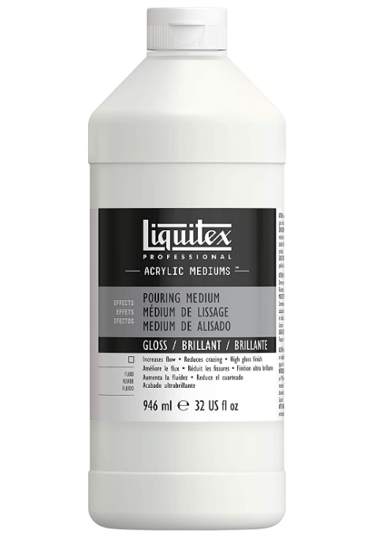
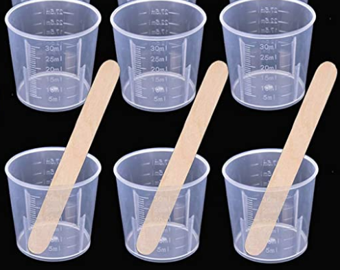
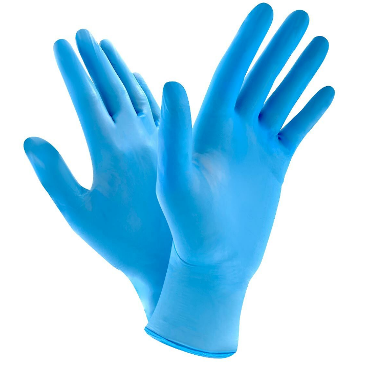
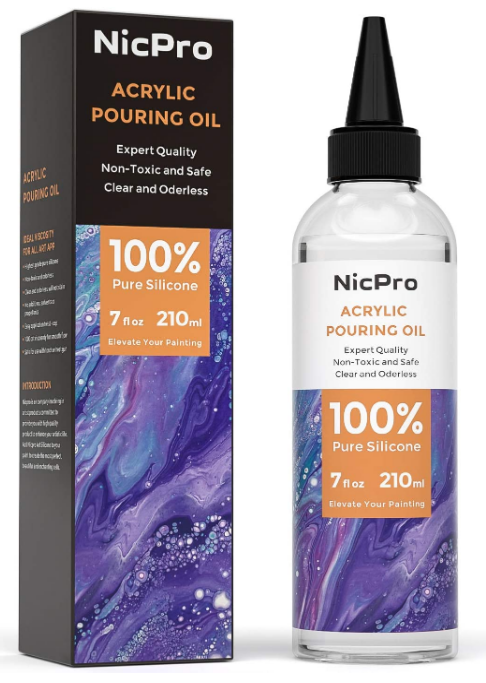

The World of Paint Pouring
Home
Learn More
Supplies
History
Tutorials
Acrylic Pour Painting Supplies

A Blank Canvas
The blank canvas serves as a base foundation onto which the paint is poured.

Premixed Pour Paint
Premixed pour paint contains the necessary pour medium already combined with the color pigment. If this material is used, a prepartion step is eliminated for the artist.

Pouring Medium
If premixed pour paint is not available, the artist can mix pouring medium with the acrylic paint pigment, to create a pour paint with the appropriate viscosity.

Mixing Cups and Stirrers
If someone is mixing acrylic paint pigment and pouring medium, then mixing cups and stirrers are needed.

Disposable Gloves
Because working with paint can be messy, disposable gloves make for easy clean up. Additionally, changing dirty gloves throughout the pouring process can reduce the chance of unintended color cross contamination.

Pouring Oil
Within paint pouring, the optional addition of oils of various kinds (silicone, coconut, and more) serve as a technique where captivating "cells" are created within the artwork.